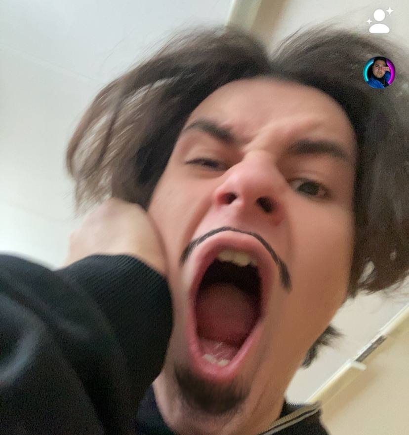
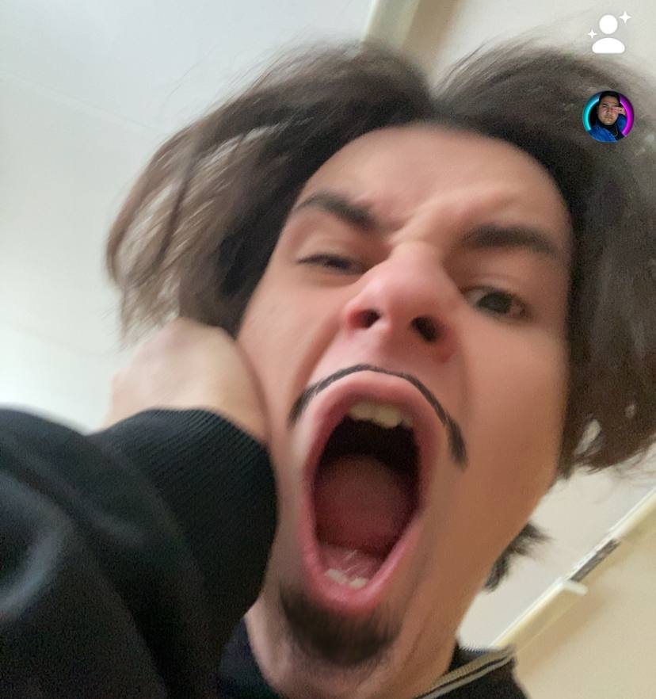
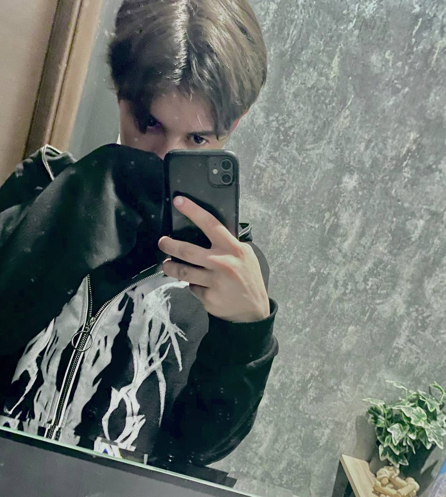

дорогой мой муж.
спасибо тебе что выбрал именно этот ответ,возможно и не с первого раза,но все же…
я бы хотела чтобы ты прочитал это от начала и до конца(почти как наши отношения,только в наших с тобой отношениях нет конца) и чтобы тебе не было скучно,по бокам есть твои милые фоточки(все не уместились) и скриншоты с нашей переписки(все эти скриншоты очень важны для меня и хранятся у меня в сердечке как самое теплое что только имеется на этой планете).
так вот.
солнышко, солнце, зай, зайчонок, зайчик, заяц, котик, котеночек, котенок, золотце, прелесть моя, любовь моя, счастье мое, лапочка моя, сладость моя, милашик, няшик, ангелочек, одуванчик, умничка, умница, чудо мое, свет мой, лучик, милый, нежный, добрый, очаровательный, заботливый, невероятный, потрясающий, сияющий, чудесный, изысканный, искренний, душевный, ослепительный, неповторимый, ласковый, безупречный, понимающий, драгоценный, ненаглядный, красивый, долгожданный, желанный, прелестный, прекрасный, единственный, любимый мой мальчик.
ты все время в моих мыслях,я не могу перестать думать о тебе,ты не выходишь у меня из головы,я очень счастлива,когда сижу с тобой.только с тобой я чувствую себя по-настоящему живой.
спасибо тебе за то,что ты существуешь в моей жизни,спасибо,что присутствуешь рядом.спасибо за все,что ты для меня делаешь,я очень благодарна тебе за все сделанное тобой для меня,я очень ценю это.спасибо,что оказываешь мне поддержку,она всегда мне помогает,она всегда поднимает меня духом и заставляет идти дальше.спасибо,что заботишься обо мне,это очень греет мою душу.
ты-это единственное,о чем я могу думать.ты невероятно красивый,ты невероятно прекрасный,ты такой потрясающий.и я не могу описать чувства которые я испытываю находясь с тобой рядом и просто в войсе.
я ощущаю неописуемые эмоции и ощущения общаясь с тобой.с тобой я будто погружаюсь в совершенно другой мир,я чувствую легкость и счастье,я чувствую любовь и внимание,нужность и ценность моего существования благодаря тебе.
каждое мое утро начинается с мыслей о тебе.каждую ночь,я думаю о том,как тебе спится или спишь ли ты вообще,высыпаешься ли ты после наших ночных переписок.кстати,как тебе сегодня спалось?ты выспался?что тебе снилось?ты очень сильно изменил мою жизнь в лучшую сторону.без тебя моя жизнь не была бы такой яркой,как сейчас.
я очень жду нашей встречи,мне так хочется погрузиться в твои объятия,утонуть в них,греясь об твоё тёплое и прекрасное тело.я хочу засыпать и просыпаться вместе с тобой,я хочу проводить все своё свободное время с тобой,хочу быть рядом всегда.с тобой и только с тобой.
для тебя нет замены и не будет никогда,никто не сможет заменить такого чудесного человека.с каждым днём я люблю тебя все сильнее и сильнее.
единственное,что мне нужно-это ты.только у тебя получается вызвать улыбку на моем лице,только у тебя получается радовать меня,только ты вызываешь у меня радость своим сообщением и просто существованием.только ты умеешь делать меня счастливее.спасибо,что помог мне обрести понятие,что такое любовь.
давай когда мы с тобой встретимся,мы будем обниматься и целоваться целый вечер,просматривая твои любимые аниме/фильмы,я приготовлю ужин для нас двоих и мы будем кушать твои любимые блюда.будем наслаждаться присутствием друг друга и ощущать счастье.будем слушать голоса друг друга и ощущать комфорт и спокойствие.но вместе с этим чувствовать волнение и трепыхание.я буду целовать тебя в лобик и поглаживать твои мягкие и приятные волосы,пока ты будешь засыпать на моем плече,я буду слушать твоё спокойное и ровное дыхание.а рано утром я не спавши всю ночь,разбужу тебя минетом)))я возьму тебя за ручку и потяну за собой на балкон,чтобы встретить НАШ рассвет вместе.и я уверена,что у нас все получится.
ты заставляешь меня чувствовать себя самым счастливым человеком в мире.только ты способен на такие невероятные вещи.я ценю то,как ты хорошо ко мне относишься.я хочу всегда заботиться о тебе и знать все,что тебя беспокоит.я хочу быть с тобой всегда.
я никогда не забуду тот момент,когда мы познакомились,это самое светлое и тёплое воспоминание в моей жизни.ты самый лучший.ты всегда знаешь,что мне нужно.
я очень хочу услышать твой самый лучший голос и увидеть твою милую мордашку.ты всегда заставляешь меня улыбаться.и я скучаю по тебе,когда ты уходишь спать,когда ты отсутсвует в войсе,даже когда ты уходишь в магазин когда мы рядом...
я очень хочу увидеть тебя,ты как картина которую рисовали все это существование мира.
я люблю тебя и только тебя.
а сейчас немного фактов(которые ты очень сильно любишь).
50 причин почему я тебя люблю:
1 ты красивый
2 ты ваще милашка
3 ты внимательный
4 ты ценишь наши отношения
5 ты старательный
6 ты умеешь поддерживать
7 мне с тобой всегда интересно
8 ты всегда можешь поддержать диалог
9 у тебя отличное чувство юмора
10 ты мне снишься
11 ты всегда знаешь ответы на самые сложные вопросы и помогаешь с ними
12 ты всегда поможешь мне
13 ты умненький
14 у тебя ахуенные глаза и волосы
15 с тобой я становлюсь лучше в какой-то степени…
16 с тобой мне легко
17 тебе нравится то,что не нравится мне в себе
18 ТЕБЯ ЗОВУТ ИЛЬЯ
19 ты терпишь все мои капризы и мой характер в целом
20 ты знаешь как заставить меня улыбнуться
21 ты меня понимаешь
22 мне нравятся твои волосы
23 я обожаю слушать твой голос
24 ты не высмеиваешь меня даже если я говорю хуйню
25 я многому у тебя научилась
26 мы понимаем друг друга с полуслова
27 я могу поделиться тобой своими тайнами и желаниями
28 с тобой я всегда честна
29 ты честный и говоришь все в лицо
30 когда ты произносишь мое имя,я готова провалиться потому,что это не в ирл
31 ты оптимистичен и никогда не унываешь
32 с тобой я могу разговаривать днями и ночами
33 когда ты спишь,я как маньячка молча смотрю на тебя…
34 я постоянно думаю о тебе
35 я очень скучаю по тебе когда ты не пишешь
36 ты всегда на моей стороне
37 с тобой я могу быть ребенком
38 я обожаю твоё имя
39 ты-самый дорогой человек для меня
40 у тебя есть своё мнение
41 у тебя самые ахуенные комплименты
42 ты всегда хвалишь меня
43 у тебя ахуенный характер
44 я доверяю тебе
45 ты любишь меня со всеми моими недостатками
46 я могу быть собой,когда ты рядом
47 от страсти к тебе,я теряю голову
48 я просто тебя очень люблю
49 в книге под названием "моя жизнь" самые лучшие главы-главы связанные с тобой
50 все эти причины НАХУЙ не нужны,ведь чтобы любить тебя-причины не нужны…
и если тебе этого мало,то пожалуйста не отрекайся от меня,а возьми меня за руку и мы вместе будем дополнять этот текст…
люблю тебя!!!
p.s. твоя любящая женушка^^
